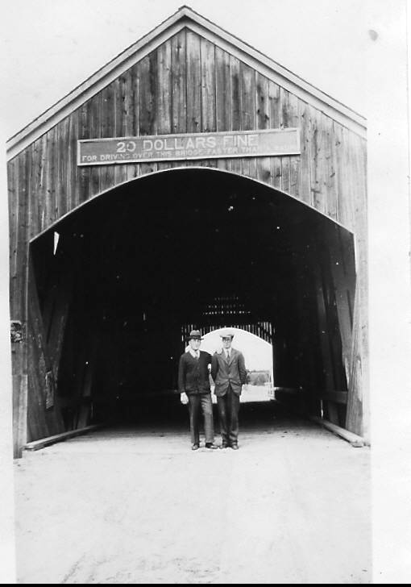

The Family Chronicle
No.77 August 25, 2004
________________

Thanks to Marjorie (Watling) Young for above photo taken at the Little Branch Bridge in 1931. In the photo are Burton Andrews, Student Minister at St. Paul’s Presbyterian Church and Charlie Spencer, teacher at the Little Branch School.
Family Reunion
Nearly 60 members of the extended Glendenning family gathered in Point Aux Carr on July 31 for our annual family get-together – every year since 1977. It was great to see so many young people. While family gatherings are always informal, we did help Ken and Verne celebrate their 80th birthdays and also presented a plaque to thank them for hosting the family gatherings for almost 30 years. Our thanks also to Loisanne (Glendenning) Gregan and her helpers for organizing our food and drinks, and for the delicious birthday cake. Next year’s reunion will be on the last Saturday of July as usual. Plan now for 2005.
Little Branch Bridge
Covered bridges were common. In my time there were three at Black River – Little Branch, Victoria near the mouth of the river at Hexham and the Cameron Bridge at Middle Black River. The Victoria Bridge was the longest. All have now disappeared; the Branch and Cameron Bridge having been replaced with concrete bridges; the Victoria Bridge was not replaced. For readers not familiar with the area, the road leading up the Little Branch was just behind the photographer and the Little Branch School, still standing, was built at the junction of the two roads.
The sign on the Little Branch Bridge reads,
TWENTY DOLLARS FINE
FOR DRIVING OVER THIS BRIDGE FASTER THAN A WALK
The reason for the restriction was to reduce the chances of damage to the structure. A team of horses trotting across the bridge could harmonize with the flexing of the span causing tremendous pressure and weaken if not crack the spans.
I am grateful to Jennie Foley (we are both descended from John Peters and Jane (Sealey) Peters) for some additional family information.
My Great Grandfather, John Peters, married Jane Sealey. They had a family of thirteen including my Grandmother Elizabeth and Jennie’s Grandfather, Robert Henry Peters.
When Jane died in 1892, John married Ann Sarah Smith (nee McKnolance) who had three children by her previous marriage. It is likely that John and Ann Sara had two children of their own, Isabel and Bedford (not the Bedford who was in the RCMP)
The story is told that, when John and his new bride, and probably some of his stepchildren, arrived back at the Peters’ home after the wedding, they found the children of his first marriage packed and standing in the yard. Apparently they moved out and did not return. Ann Sarah (whose nickname was “Old Fuzzy”) was shunned by the community but continued to live there after Grandfather’s death.
Mildred, a daughter of Uncle Chip Glendenning, wrote the following:
“The highlight of our summer as children was a visit to Black River and a return surprise visit from our cousins, and as time passes, boy and girl friends. During the early years, this was a weekend visit – a picnic lunch along the Miramichi Road between Bathurst and Chatham, crossing the Miramichi river by ferry, and Saturday night at their home. If we were too many visitors for one house, the excess just went across the road to the home of Aunt Jean’s brother, Jim, for the night.
The entire home atmosphere was extremely casual – no apparent cares or worries, no complaints, always much laughter, happy family jokes and banter. We often noticed a quantity of nicely finished lumber piled along the wall of the upstairs hallway and wondered why it was there. Only years later was the mystery solved. When their daughter, Venetia, was born, they decided that a safety rail should be put along the stairs and the upper hall, but it was not until the house was being “perked up” for her wedding reception that the railings were finally put in place.
Generally one family member remained behind, while one of our cousins came back with us to stay at least a week, but often longer, depending on when their family decided to pay us a visit. One year, the oldest daughter, Grace, was the one to come back with us. She and Clint (Mildred’s brother, Clinton – Ed.) enjoyed teasing and playing tricks on each other. During her stay, we all enjoyed attending the annual school picnic. This pleased her immensely, although the following day she didn’t feel so much like acting, but wouldn’t admit it was because of all the goodies provided – especially the ice cream cones.
On our way home on Sunday afternoon there was a steep hill to contend with as we crossed the Tabusintac River, many miles up river from where I eventually settled after my first marriage. The Model T Ford was not equipped for climbing hills. For one thing, the gas was somewhat gravity fed, but more importantly, I recently learned that the gears were not the same as on the cars which I have since learned to drive. It seems that the gears were either forward or reverse, the latter providing the greater power. Therefore, Dad would turn the car around, no small feat on a narrow dirt road with a deep ditch on either side, and ascend the hill in reverse. What a thrill for children!”
The Chronicle is an occasional newsletter prepared by Don Glendenning and posted on the family website. It is designed to share information about my family, community and the times in which I grew up. While every effort is made to be accurate, errors are likely to occur. Comments, enquiries and information may be sent to 62 Queen Elizabeth Drive, Charlottetown, PEI, C1A 3A9. Tel: 902-892-5859 Email: dglende@auracom.com Web: www.glendenning.net